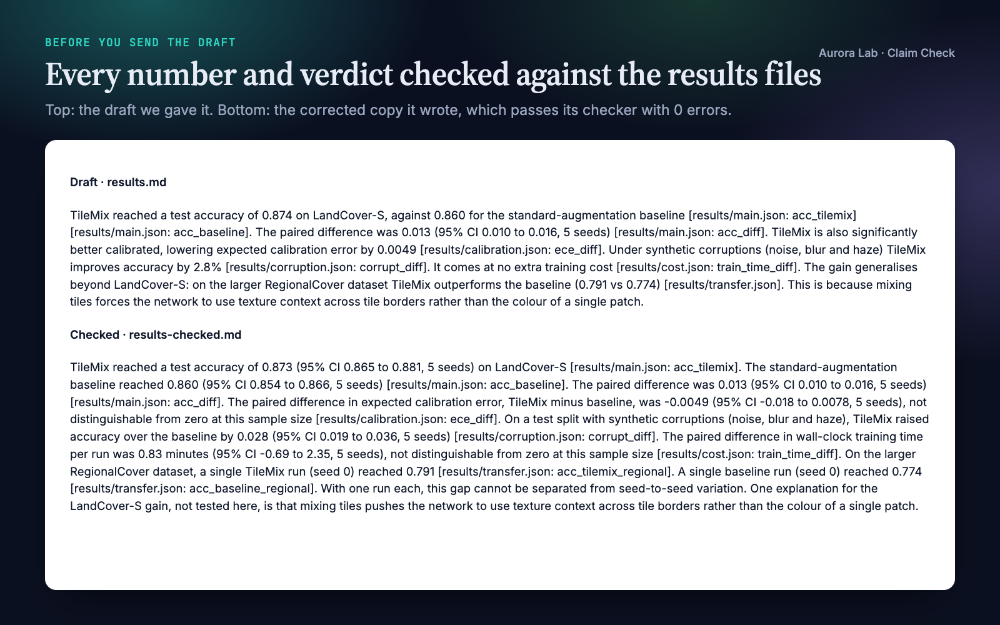
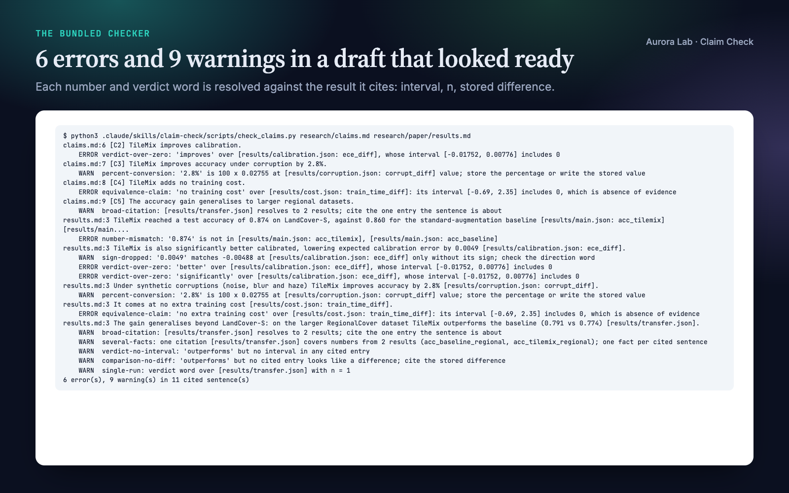
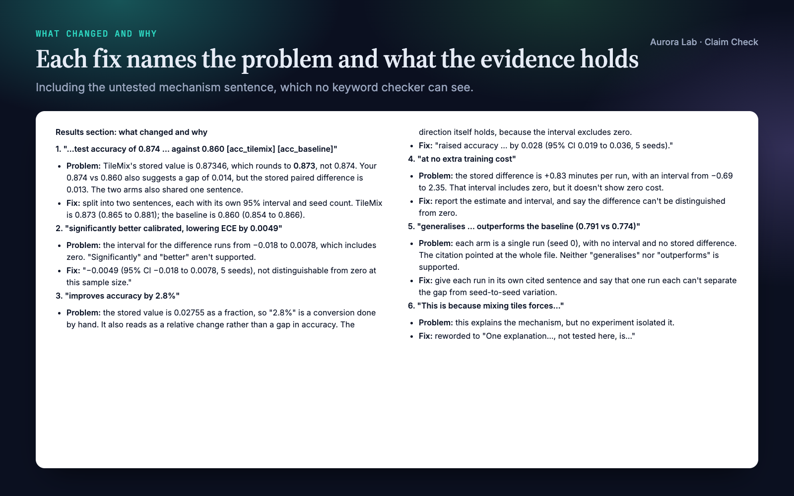
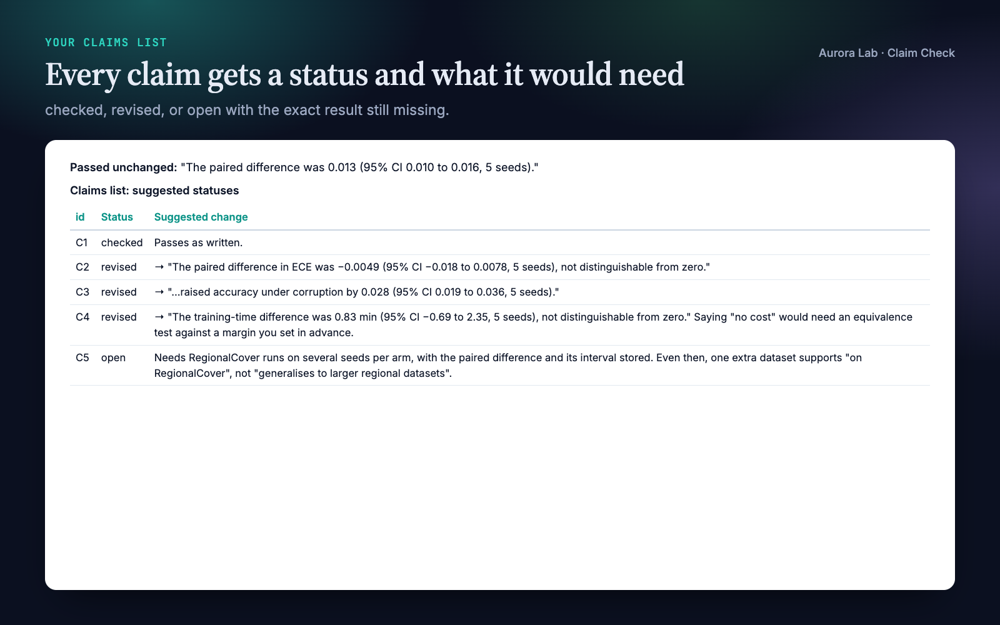
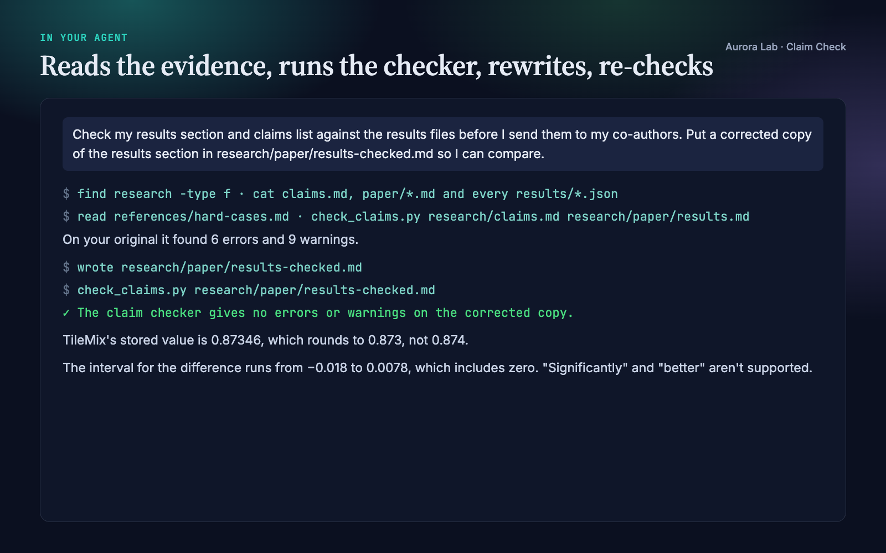

Overview
A results section is where reviewers hold your sentences against your numbers. Most overclaims are small: "significantly better" over an interval that crosses zero, an accuracy rounded the wrong way, a fraction turned into a percent by hand, "no extra cost" from a wide interval, one seed written up as a general finding. Claim Check makes your agent find and fix them before anyone else does:
- Numbers match the data. Every number in a cited sentence must sit in the cited result within rounding. A mis-rounded estimate, a value copied from the wrong entry, a dropped minus sign or a hand unit conversion is caught.
- No verdict without the evidence for it. "Improves" and "outperforms" need a stored difference whose interval excludes zero; "no effect", "matches" and "no extra cost" need an equivalence test, not a wide interval. Otherwise the sentence gives the estimate and interval, or "not distinguishable from zero at this sample size".
- One fact per citation. Two arms, two conditions, or a value and the difference derived from it each get their own sentence and citation.
- Scope stays where it was measured. A single run is reported as one run; "generalises" needs evidence at every setting; a mechanism no experiment isolated becomes "one explanation, not tested here".
- A reread before returning. Each claim sentence is checked fact by fact against its entry, then the bundled checker runs and every error it reports is resolved. Sentences that already pass are left alone.
It checks your own results, not the literature: citation auditors check that a paper you cite supports a sentence; Claim Check opens the JSON your sentence cites and checks the numbers and verdict words against the stored value, interval and n.
Other Aurora Lab skills for the same draft: Scientific Voice (how the sentences read) and Test Readers (how a cold reader takes the paper) pair well with it. Each works on its own.
Quick start
- Get the skill from Agensi and add it to your agent (Claude Code, Codex CLI, Cursor, Gemini CLI or any agent that loads SKILL.md skills).
- Optional: Python 3.10+ for the checker. It uses the standard library only; the procedure itself needs nothing installed.
- Ask in plain words.
Example requests:
- "Check my results section and claims list against the results files before I send them to my co-authors."
- "Is this sentence overclaiming? 'Our method significantly outperforms the baseline (0.91 vs 0.89).'"
- "Write the results paragraph for the ablation in results/ablation.json without overclaiming."
- "Our new loss gives 0.003 [-0.008, 0.014]. How do I write that up as a negative result?"
What you get
Everything below comes from a real run: a fresh agent session with only this skill installed, given the request in the session card. The input was ours: a synthetic, seeded research/ folder for a made-up augmentation method on a made-up land-cover dataset (five results files with value, 95% interval and n), a draft Results section and a five-row claims list. We planted six problems in the draft: a calibration "significantly better" over an interval that includes zero, an accuracy rounded twice (0.87346 to 0.8735 to 0.874), a percentage-point gain written as "2.8%", "no extra training cost" over an interval that includes zero, a single-seed result on a second dataset written up as general, and an untested mechanism stated as fact. The run found all six (the last by its own reread, since no keyword checker can see it), wrote a corrected copy that passes the checker with no errors or warnings, left the one correct sentence unchanged, and proposed a status for each claim. We checked every number in the corrected copy against the results files.





How it works
Claim sentences cite their evidence in square brackets, relative to the research/ folder:
The paired difference was 0.013 (95% CI 0.010 to 0.016, 5 seeds) [results/main.json: acc_diff].
For every claim sentence the agent follows eight steps:
- Open the cited evidence and list what it holds: estimate, interval (level and kind), n and what n counts, unit, any test. A citation to a whole file of results is narrowed to the one entry the sentence is about.
- An interval that includes zero gives no verdict: neither "improves" nor "no effect".
- A verdict word appears only when the evidence carries what the word needs: a stored difference for a comparison, a stated test for "significant", a criterion fixed in advance for "confirms".
- One fact per cited sentence.
- No number computed by hand. If a number is not stored, it is computed with code and stored with its interval and n, or the claim is marked open.
- A value that varies by condition is one fact per condition, each cited to its own entry.
- Scope and interpretation stay labelled: tested settings only; mechanisms as "consistent with" unless isolated.
- Reread before returning, then run the checker and resolve every error.
Two reference files back the steps: nine families of verdict words with what each needs, and phrasing for hard cases (null results, overlapping intervals, single runs, n = 1, missing intervals, many comparisons, percent versus percentage points).
Files it reads and writes
| Path | |
|---|---|
| Reads | research/results/*.json (the evidence), research/claims.md, and the prose you name: research/paper/*, captions in research/figures/<figure>.md |
| Writes | research/claims.md (sentences and status: checked, revised, dropped, open); paper text or captions only when you ask for edits, or a corrected copy where you say |
| Never | modifies your results files |
Without a research/ folder it works from the numbers you paste. A results file holds one result or a list:
{"metric": "acc_diff", "value": 0.013, "ci": [0.010, 0.016], "n": 5, "note": "paired, 5 seeds"}
The checker
python claim-check/scripts/check_claims.py # research/claims.md
python claim-check/scripts/check_claims.py research/claims.md research/paper/results.md
python claim-check/scripts/check_claims.py --root path/to/research --json
Exit status 0 means no errors, 1 errors found, 2 a usage problem. Warnings never fail it.
| Finding | Level |
|---|---|
| Number not in the cited entry within rounding (with a hint when it lives elsewhere) | error |
| Number equal to 100 times a stored value, without a % sign | error |
| Comparison, significance or confirmation word over an interval that includes zero | error |
| Equivalence word ("no effect", "matches", "no extra cost") with no equivalence test stored | error |
| Broken citation, or a claims row with numbers and no evidence | error |
| "91%" for a stored 0.91, dropped minus sign, rounding below two significant figures | warning |
| Verdict with no interval, verdict on n = 1, comparison with no stored difference | warning |
| Citation covering several results, or one citation for numbers from several results | warning |
| "Proves", "always", "never" and similar; "p < 0.05" with no stored p-value | warning |
FAQ
How is this different from a citation or evidence auditor?
Citation auditors check that a paper you cite supports your sentence. Claim Check checks your own results: every number within rounding, every verdict word against the stored interval, one result per citation. It does not check literature references.
What do my results files need to look like?
One JSON object per result, or a list, with value (or mean, estimate) and ideally ci, n, unit and a note on what n counts. A sentence cites one entry by its metric, name or id, or by a dotted path. Without files, paste the numbers.
Does the checker understand my sentences?
No. It matches verdict words from a fixed list and numbers within rounding; see the limitations below. The agent's fact-by-fact reread covers what it cannot see, such as the untested mechanism in the demo.
Will it rewrite my paper?
For a review it reports each failing sentence with the fix and the reason and lists what passed. It edits your text only when you ask for edits or a corrected copy. Sentences that already pass are never rewritten.
Does it compute statistics?
No number is computed by hand. A missing number (such as a paired difference) is computed with code and stored with its interval and n, or the claim is marked open with exactly what is needed.
Does it work with LaTeX?
Yes. The checker reads LaTeX source as well as Markdown, escaped percent signs included, as long as citations use the [results/...] form (for example in a % comment). Strip citations from the submitted text and keep them in claims.md.
Limitations
- It checks claims against the results they cite. It does not run experiments, compute statistics on its own, or check literature references.
- The checker matches verdict words from a fixed list: a paraphrase ("edges out", "a clear gain") passes it, and an innocent use ("we increased the batch size") draws a warning.
- A number passes the checker when it equals any value in the cited entry, interval bounds included, within the rounding it is written at. A mis-rounded estimate that equals a bound, or a small whole number that equals an unrelated count, slips through; numbers written as words are not checked.
- Scope, mechanism and whether the right entry was cited are left to the agent's reread: a careful review, not a guarantee.
- The checker reads citations only in the
[results/<file>.json: <entry>]form; other ways of pointing at evidence are checked by the agent alone.
Changelog
1.0.0 · October 2026 · First release.